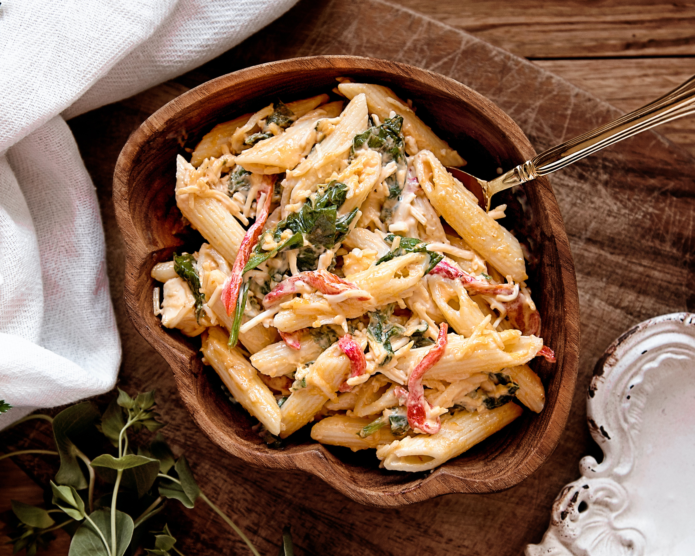

Salada Da Casa
Uma deliciosa salada com ingredientes mediterrâneos que vai deixar seu dia muito mais feliz.

Salada Tropical
A famosa salada que acompanha o nosso PF do dia a dia, com ingredientes tropicais e um tempero MARAVILHOSO.

Lasanha de Ovo
Você já experimentou lasanhas de vários sabores, mas dúvido que já experimentou Lasanha de Ovo, essa é a nossa especialidade!

Massa Queijuda
A melhor massa do Brasil está aqui no The Daisy, o queijo mais fresco de todos e ingredientes inesquecíveis.